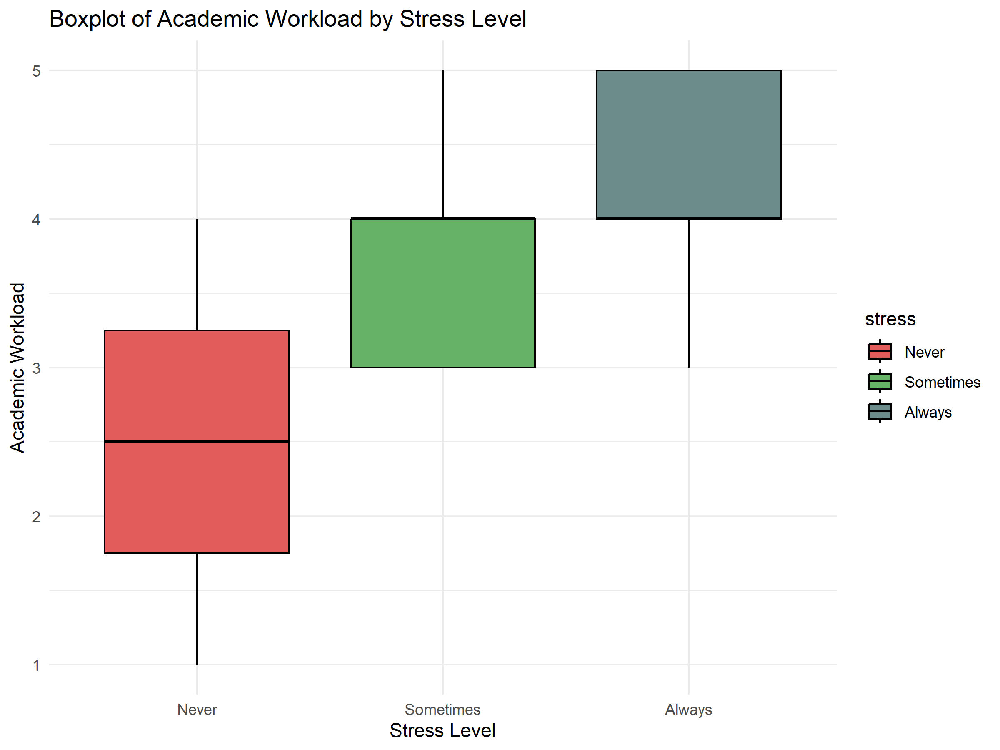
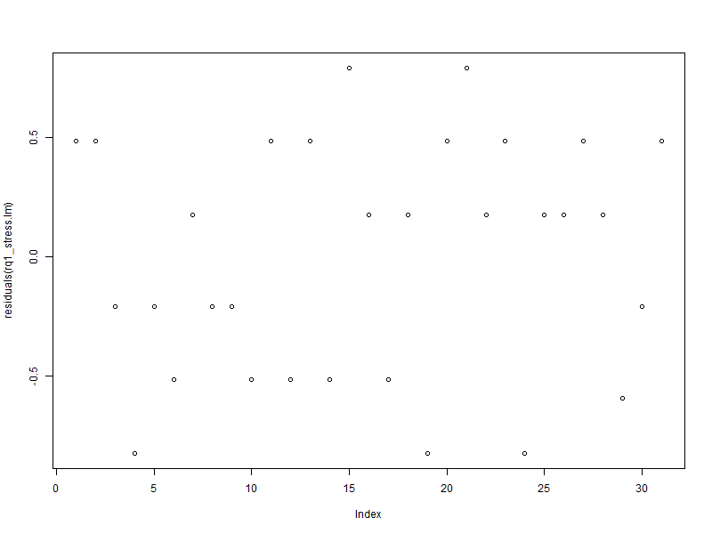
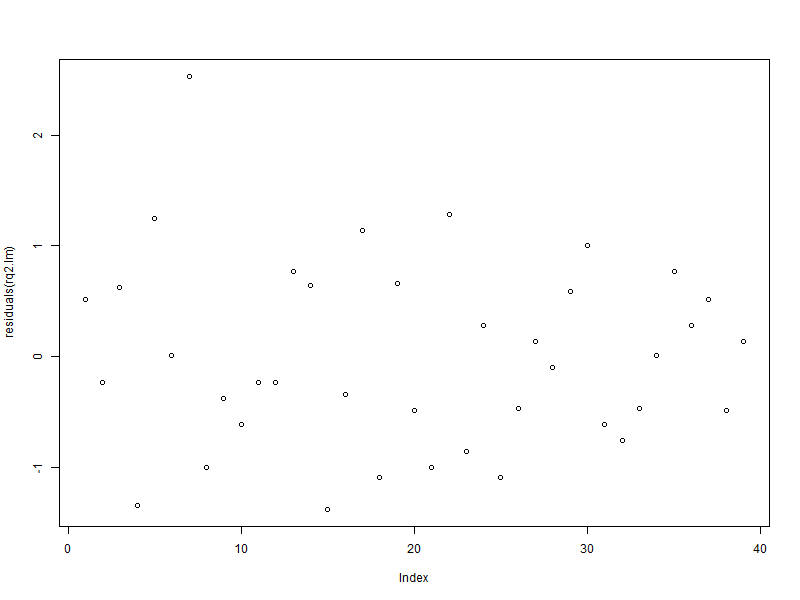
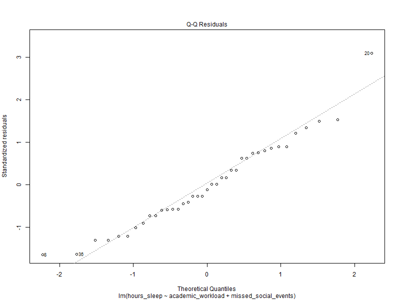
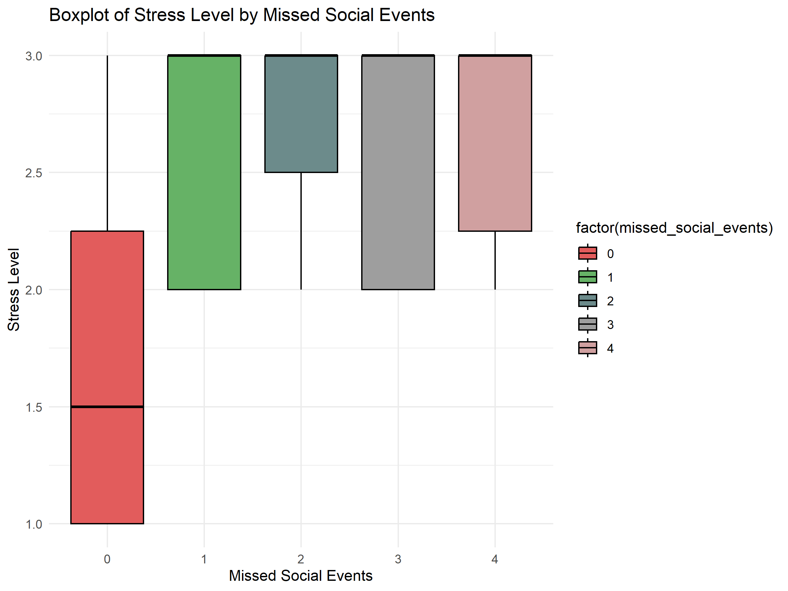
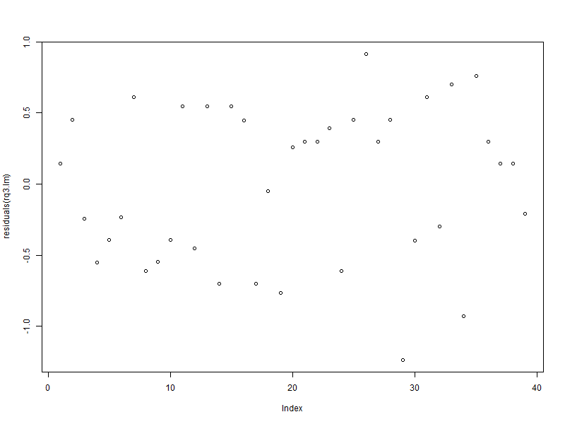

# Select a random sample of n rowsset.seed(1)random_indices <-sample(1:nrow(data_cleaned), n)sample_data <- data_cleaned[random_indices, ]# sample_dataattach(sample_data)
4. Analysis
Section 3. Simple and Multiple Linear Regressions This part of the analysis focuses on applying linear regression to address the three research questions outlined in the introduction. We will explore whether there is a relationship between students’ academic workload and the prevalence of mental health issues; between academic workload, the amount of sleep students get, and its impact on mental health; and finally, between mental health, students’ living situations, and their ability to maintain a work-life balance. All of these relationships were found to be statistically significant!
In what follows, the three research questions will be investigated for any statistically significant results.
Research Question 1
a. Relevant graphs & tables
Research Question 1 is concerned with determining whether there is a relationship between students’ academic workload and the prevalence of mental health issues in students. To answer this question, we start by plotting a boxplot of academic workload by stress level. This plot suggests that higher stress levels are associated with a higher academic workload. On average, students who “Always” or “Sometimes” feel stressed tend to have a higher workload than those who “Never” feel stressed.

Boxplot of Academic Workload by Stress Level
c. Necessary Assumptions
To confirm this association, we implement a simple linear regression model, where the dependent variable is stress_numeric (the stress variable, converted to numeric values), and the independent variable is academic_workload. To implement this model, we check the following assumptions using the following plot of the residuals:

Residuals Plot
Independence of errors: Since the plot has no noticable pattern, the independence assumption is satisfied.
Normality of errors: Since our sample size is sufficiently large, by the Central Limit Theorem the sample mean (and by extension, the sampling distribution of residuals) approximately follows a Normal distribution.
Homogeneity of variances amongst errors: Since the residuals plot has a “horizontal band appearance”, this suggests that variance of the residuals are the same for all values of the independent variable academic_workload.
Since all the assumptions are met, we run the regression using the code in Appendix B.
d. Computation and statistical test output
The regression analysis produced the following results:
Intercept: \(\beta_0 = 1.22389\quad (SE = 0.40942,\quad t = 2.989,\quad p = 0.00495)\).
Slope: \(\beta_1 = 0.32655\quad (SE = 0.09945,\quad t = 3.284,\quad p = 0.00224)\).
The residual standard error is 0.5353 with 37 degrees of freedom. The \(R^2\) value is 0.2256, and the F-statistic is \(F(1, 37) = 10.78\), with a p-value of \(0.002\).
The equation of the regression line is given by: \[
\text{Stress} = 1.22389 + 0.32655 \cdot \text{Academic Workload}
\]
e. Interpretation
The small \(p-value = 0.00224\) indicates that academic workload is a significant predictor of stress. Therefore, we can conclude that there is a significant relationship between students academic workload and their stress levels.
Research Question 2 investigates whether there is a relationship between students’ academic workload, the amount of sleep they get, and impact on mental health. Since the ANOVA above showed no significant relationship between stress and hours of sleep, we investigate the effect of another factor, the number of missed social events.To begin, we plot a boxplot of hours of sleep by the number of missed social events. This plot suggests students who miss more social events tend to have fewer hours of sleep on average.
Boxplot of Hours Sleep by Missed Social Events
c. Necessary Assumptions
To assess this relationship, we use a multiple linear regression model with hours of sleep as the dependent variable, and academic workload and missed social events as the independent variables. Before interpreting this model, we check the following assumptions:
 
Independence of errors: The residual plot shown above indicates no clear patterns, which suggests independence.
Normality of errors: Since the sample size is large, the Central Limit Theorem implies that the residuals should approximate a normal distribution. Also, a QQ-plot confirms Normality.
Homogeneity of variances: The residuals plot exhibits a roughly horizontal band, indicating constant variance across predicted values.
No multi-collinearity: We calculated the VIF of each independent variable, and found that \(VIF(academic\_workload) = 1.076844\), and \(VIF(missed\_social\_events) = 1.076844\). Since they are both less than 5,this indicates there is little correlation between them.
With all assumptions adequately met, we proceed with the regression analysis. The code used to generate the model can be found in Appendix B.
d. Computation and statistical test output
The regression analysis produced the following results:
Intercept: \(\beta_0 = 8.5521\quad (SE = 0.6661,\quad t = 12.838,\quad p = 5.3e^{-15})\).
Slope 1: \(\beta_1 = -0.1412\quad (SE = 0.1666,\quad t = -0.848,\quad p = 0.40208)\).
Slope 2: \(\beta_2 = -0.3763\quad (SE = 0.1194,\quad t = -3.151,\quad p = 0.00327)\).
The residual standard error is 0.864 with 36 degrees of freedom. The \(R^2\) value is 0.2653, the adjusted \(R^2\) is 0.2245, and the F-statistic is \(F(2, 36) = 6.5\), with a p-value of \(0.003889\).
The equation of the regression line is given by: \[
\text{Hours of Sleep} = 8.5521 − 0.1412 \cdot \text{Academic Workload} - 0.3763 \cdot \text{Missed Social Events}
\]
e. Interpretation
The output of the regression analysis shows that the missed social events has a statistically significant negative association with hours of sleep (p = 0.00327). However, academic workload does not have a significant relationship with hours of sleep (p = 0.40208).
Research Question 3 examines whether mental health, represented by stress levels, is affected by students’ living situations and their ability to maintain a work-life balance. To explore this relationship, we first plot a boxplot of stress level by missed social events, with students grouped by stress categories (“Always,” “Never,” and “Sometimes”). This plot suggests that students who miss social events “Always” or “Sometimes” have higher stress levels, while those who “Never” miss social events report lower stress levels.

Boxplot of Missed Social Events by Stress
c. Necessary Assumptions
To investigate the impact of missed social events and living situations on stress, we use a multiple linear regression model. The response variable is stress (in numeric form), and the predictors are missed social events and living situation. We verify the following assumptions:

Independence of errors: The residual plot indicates no clear patterns, suggesting that the errors are independent.
Normality of errors: Since the sample size is large, the Central Limit Theorem implies that the residuals should approximate a normal distribution. Also, a QQ-plot confirms Normality.
Homogeneity of variances: The residuals plot exhibits a roughly horizontal band, indicating constant variance across predicted values.
No multi-collinearity: We calculated the VIF of each independent variable, and found that \(VIF(missed\_social\_events) = 1.009045\), and \(VIF(living\_situation) = 1.003006\). Since both VIF values are close to 1, there’s no indication of multicollinearity in this model.
With all assumptions adequately met, we proceed with the regression analysis. The code used to generate the model can be found in Appendix B.
d. Computation and statistical test output
The regression analysis produced the following results:
Intercept: \(\beta_0 = 1.93006\quad (SE = 0.27980,\quad t = 6.898,\quad p = 6.02e^{-08})\).
Slope 1: \(\beta_1 = 0.15560\quad (SE = 0.07721,\quad t = 2.015,\quad p = 0.0518)\).
Slope 2: \(\beta_2 = 0.81061\quad (SE = 0.39928,\quad t = 2.030,\quad p = 0.0502)\).
Slope 3: \(\beta_2 = 0.21206\quad (SE = 0.28310,\quad t = 0.749,\quad p = 0.4590)\).
Slope 4: \(\beta_2 = 0.30493\quad (SE = 0.25406,\quad t = 1.200,\quad p = 0.2383)\).
The residual standard error is 0.5745 with 34 degrees of freedom. The \(R^2\) value is 0.1806, the adjusted \(R^2\) value is 0.08416, and the F-statistic is \(F(4, 34) = 1.873\), with a p-value of \(0.1378\).
The equation of the regression line is given by: \[
\text{Stress} = 1.93006 + 0.15560 \cdot \text{Missed Social Events} + 0.81061 \cdot \text{Living On Campus} + 0.21206 \cdot \text{Living With Family} + 0.30493 \cdot \text{Living With Roomates}
\]
e. Interpretation
The results indicate that missed social events are a marginally significant predictor of stress levels (p = 0.0518). Living situation, specifically living on campus, is also a marginally significant predictor (p = 0.0502). However, living with family (p = 0.4590) and living with roommates (p = 0.2383) do not significantly predict stress.
6. Limitations
Although this study has provided several valuable insights into the relationship between students’ workload, stress, sleep, and work-life balance, there are a few limitations that may have affected the accuracy of the findings. Some of these limitations include possible issues with ensuring sample randomization, survey question design, and sample size. The first limitation is the potential issue with ensuring randomization in the sample selection. Although we aimed to select a random sample of students from the survey responses, the process may have been influenced by biases in how respondents answered the survey. For example, certain groups of students may have been more likely to complete the survey, potentially leading to an unrepresentative sample. Additionally, some of the survey questions could have been clearer or more specific, which might have helped reduce the possibility of misinterpretation. Lastly, expanding the sample size would improve the accuracy and applicability of the findings. In the future, the study could be improved by ensuring a completely randomised design and revisiting our survey questions to capture more accurate responses.
POTENTIAL LIMITATIONS - Failing to reject null hypotheses I did many more tests of my own that could not reject the null hypothesis that I did not include in the report. This is because many of them reached conclusions that were hard to believe (e.g., academic workload has no relationship with mental health issues). - Survey - Students might have: rushed through completing surveys just for the credit or they might have had privacy concerns and did not feel comfortable talking about their mental health - direct/indirect research He said that measuring a complex topic like mental health through symptoms such as stress and anxiety is a form of “indirect research”, and that we can never be fully certain that the results of our tests are reliable or valid.
7. Conclusion
LINEAR REGRESSION CONCLUSION ONLYs The linear regression analysis conducted for the three research questions of this study provides valuable insights into the factors affecting student stress and mental health. For Research Question 1, we found a significant positive relationship between academic workload and stress levels, suggesting that students with heavier workloads tend to experience higher levels of stress. In Research Question 2, while academic workload did not significantly impact the amount of sleep, missed social events were found to significantly reduce hours of sleep, which may contribute to poor mental health. For Research Question 3, missed social events and living situation were marginally significant predictors of stress, indicating that students who miss social events or live on campus tend to report higher stress levels. These findings highlight the importance of considering multiple factors in understanding a student’s overall well-being. However, the limitations of this analysis, including potential issues with sample randomization and measurement quality, should be addressed in future research to enhance the robustness and accuracy of the results. Future studies should also explore other possible variables, such as social support and coping mechanisms, which may further explain the mental health challenges faced by students.
TODO - Explain how the random sample was chosen - Include explanation for removing outliers - Move R code into same file -
Appendix B
# Research Question 1 - Boxplotlibrary(ggplot2)
Warning: package 'ggplot2' was built under R version 4.4.2
# sample_data$stress <- factor(sample_data$stress, levels = c("Never", "Sometimes", "Always"))# boxplot_plot <- ggplot(sample_data, aes(x = factor(stress), y = academic_workload)) +# geom_boxplot(fill = "#56B4E9", color = "black") +# labs(title = "Boxplot of Academic Workload by Stress Level",# x = "Stress Level",# y = "Academic Workload") +# theme_minimal()sample_data$stress <-factor(sample_data$stress, levels =c("Never", "Sometimes", "Always"))boxplot_plot <-ggplot(sample_data, aes(x =factor(stress), y = academic_workload, fill = stress)) +geom_boxplot(color ="black") +scale_fill_manual(values =c("Never"="#E25C5C", "Sometimes"="#66B266", "Always"="#6C8B8B")) +labs(title ="Boxplot of Academic Workload by Stress Level",x ="Stress Level",y ="Academic Workload") +theme_minimal()print(boxplot_plot)
# Save the plot as a PNG fileggsave("boxplot_academic_workload_by_stress.png", plot = boxplot_plot, width =8, height =6, dpi =300)
# Research Question 1 - Simple Linear Regressionsample_data$stress_numeric <-as.numeric(factor(sample_data$stress, levels =c("Never", "Sometimes", "Always")))rq1_stress.lm =lm(stress_numeric ~ academic_workload, data = sample_data)summary(rq1_stress.lm)
Call:
lm(formula = stress_numeric ~ academic_workload, data = sample_data)
Residuals:
Min 1Q Median 3Q Max
-1.5301 -0.3668 0.1434 0.4699 0.7965
Coefficients:
Estimate Std. Error t value Pr(>|t|)
(Intercept) 1.22389 0.40942 2.989 0.00495 **
academic_workload 0.32655 0.09945 3.284 0.00224 **
---
Signif. codes: 0 '***' 0.001 '**' 0.01 '*' 0.05 '.' 0.1 ' ' 1
Residual standard error: 0.5353 on 37 degrees of freedom
Multiple R-squared: 0.2256, Adjusted R-squared: 0.2047
F-statistic: 10.78 on 1 and 37 DF, p-value: 0.002245
# Assumptions for Research Question 1 - Simple Linear Regressionpng("residuals_rq1.png", width =800, height =600)# Plot code goes here, for example:plot(residuals(rq1_stress.lm))dev.off()
png
2
# Research Question 2 - Boxplot# boxplot_plot <- ggplot(sample_data, aes(x = factor(missed_social_events), y = hours_sleep)) +# geom_boxplot(fill = "#56B4E9", color = "black") + # Customize the colors if desired# labs(title = "Boxplot of Hours of Sleep by Missed Social Events",# x = "Missed Social Events",# y = "Hours of Sleep") +# theme_minimal()boxplot_plot <-ggplot(sample_data, aes(x =factor(missed_social_events), y = hours_sleep, fill =factor(missed_social_events))) +geom_boxplot(color ="black") +scale_fill_manual(values =c("0"="#E25C5C", "1"="#66B266", "2"="#6C8B8B", "3"="#9E9E9E", "4"="#D0A0A0")) +labs(title ="Boxplot of Hours of Sleep by Missed Social Events",x ="Missed Social Events",y ="Hours of Sleep") +theme_minimal()print(boxplot_plot)
# Save the plot as a PNG file# ggsave("boxplot_hours_sleep_by_missed_social_events.png", plot = boxplot_plot, width = 8, height = 6, dpi = 300)
# Research Question 2 - Multiple Linear Regressionrq2.lm =lm(hours_sleep ~ academic_workload + missed_social_events, data = sample_data)summary(rq2.lm)
Call:
lm(formula = hours_sleep ~ academic_workload + missed_social_events,
data = sample_data)
Residuals:
Min 1Q Median 3Q Max
-1.37588 -0.54906 -0.09342 0.60662 2.53031
Coefficients:
Estimate Std. Error t value Pr(>|t|)
(Intercept) 8.5521 0.6661 12.838 5.3e-15 ***
academic_workload -0.1412 0.1666 -0.848 0.40208
missed_social_events -0.3763 0.1194 -3.151 0.00327 **
---
Signif. codes: 0 '***' 0.001 '**' 0.01 '*' 0.05 '.' 0.1 ' ' 1
Residual standard error: 0.864 on 36 degrees of freedom
Multiple R-squared: 0.2653, Adjusted R-squared: 0.2245
F-statistic: 6.5 on 2 and 36 DF, p-value: 0.003889
# Assumptions for Research Question 2 - Multiple Linear Regressionpng("residuals_rq2.png", width =800, height =600)# Plot code goes here, for example:plot(residuals(rq2.lm))dev.off()
png
2
# Assumptions for Research Question 2 - Multiple Linear Regressionpng("qq_rq2.png", width =800, height =600)# Plot code goes here, for example:plot(rq2.lm, which=2)dev.off()
png
2
# Assumptions for Research Question 2 - Multiple Linear Regressionlibrary(car)
Warning: package 'car' was built under R version 4.4.2
Loading required package: carData
Warning: package 'carData' was built under R version 4.4.2
# Research Question 3 - Boxplot# boxplot_plot <- ggplot(sample_data, aes(x = factor(missed_social_events), y = stress_numeric)) +# geom_boxplot(fill = "#56B4E9", color = "black") +# labs(title = "Boxplot of Missed Social Events by Stress Level",# x = "Missed Social Events",# y = "Stress Level") +# theme_minimal()boxplot_plot <-ggplot(sample_data, aes(x =factor(missed_social_events), y = stress_numeric, fill =factor(missed_social_events))) +geom_boxplot(color ="black") +scale_fill_manual(values =c("0"="#E25C5C", "1"="#66B266", "2"="#6C8B8B", "3"="#9E9E9E", "4"="#D0A0A0")) +labs(title ="Boxplot of Stress Level by Missed Social Events",x ="Missed Social Events",y ="Stress Level") +theme_minimal()print(boxplot_plot)
# Save the plot as a PNG fileggsave("boxplot_missed_social_events_by_stress.png", plot = boxplot_plot, width =8, height =6, dpi =300)
# Research Question 3 - Multiple Linear Regressionrq3.lm <-lm(stress_numeric ~ missed_social_events + living_situation, data = sample_data)summary(rq3.lm)
Call:
lm(formula = stress_numeric ~ missed_social_events + living_situation,
data = sample_data)
Residuals:
Min 1Q Median 3Q Max
-1.2350 -0.4251 0.1426 0.4538 0.9143
Coefficients:
Estimate Std. Error t value Pr(>|t|)
(Intercept) 1.93006 0.27980 6.898 6.02e-08 ***
missed_social_events 0.15560 0.07721 2.015 0.0518 .
living_situationLiving on campus 0.81061 0.39928 2.030 0.0502 .
living_situationLiving with family 0.21206 0.28310 0.749 0.4590
living_situationLiving with roommates 0.30493 0.25406 1.200 0.2383
---
Signif. codes: 0 '***' 0.001 '**' 0.01 '*' 0.05 '.' 0.1 ' ' 1
Residual standard error: 0.5745 on 34 degrees of freedom
Multiple R-squared: 0.1806, Adjusted R-squared: 0.08416
F-statistic: 1.873 on 4 and 34 DF, p-value: 0.1378
# Assumptions for Research Question 3 - Multiple Linear Regressionpng("residuals_rq3.png", width =800, height =600)# Plot code goes here, for example:plot(residuals(rq3.lm))dev.off()
png
2
# Assumptions for Research Question 3 - Multiple Linear Regressionlibrary(car)vif(rq3.lm)